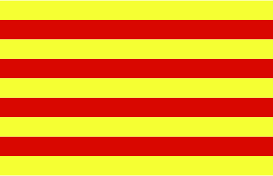
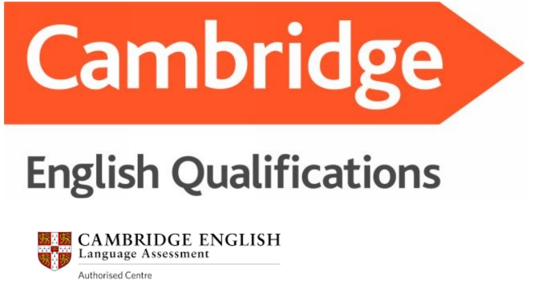

Francès
Anglès
Català
Alemany

Rus
Italià

Espanyol
Portuguès

Cursos estructurats sistemàticament amb l'objectiu d'aprendre l'idioma de manera progressiva. Tenim cura de tots els aspectes de la llengua: gramàtica, vocabulari, lectura, escriptura i, especialment, comprensió i expressió oral (Listening/Speaking). A IEI Sant Andreu entenem que un idioma és abans de tot comunicatiu, però és important veure totes les seves vertents per poder utilitzar-lo correctamente tant a nivell escrit com a nivell parlat.
El nostre professorat és titulat, amb formació acadèmica a l'ensenyança de l'idioma, i amb experiència. A IEI Sant Andreu, sabem que ser un bon professor no es una feina fàcil. Al nostre centre avaluem aspectes com pa punctualitat, la serietat, la psicologia a classe, la inicaitiva, els coneixements, etc.
Cursos basats en els nivells del Marc de Referència Europeu de les Llengües (A1-A2-B1-B2-C1-C2)
Es realitzaran proves de nivell gratuïtes i s'analitzarà la situació de l'alumnat per determinar el nivell o tipus de curs que millor s'adapti a les seves necessitats: classes particulars, curs acadèmic, etc.
Som centre preparador d'examens de Cambridge (First, Advanced, IELTS) amb un alt percentatge d'aprovats.
Institut Europeu d'Idiomes
C/ Pons i Gallarza n1 1o 2a
Email: numorsl@yahoo.es
Tel.932743444
08030 Barcelona